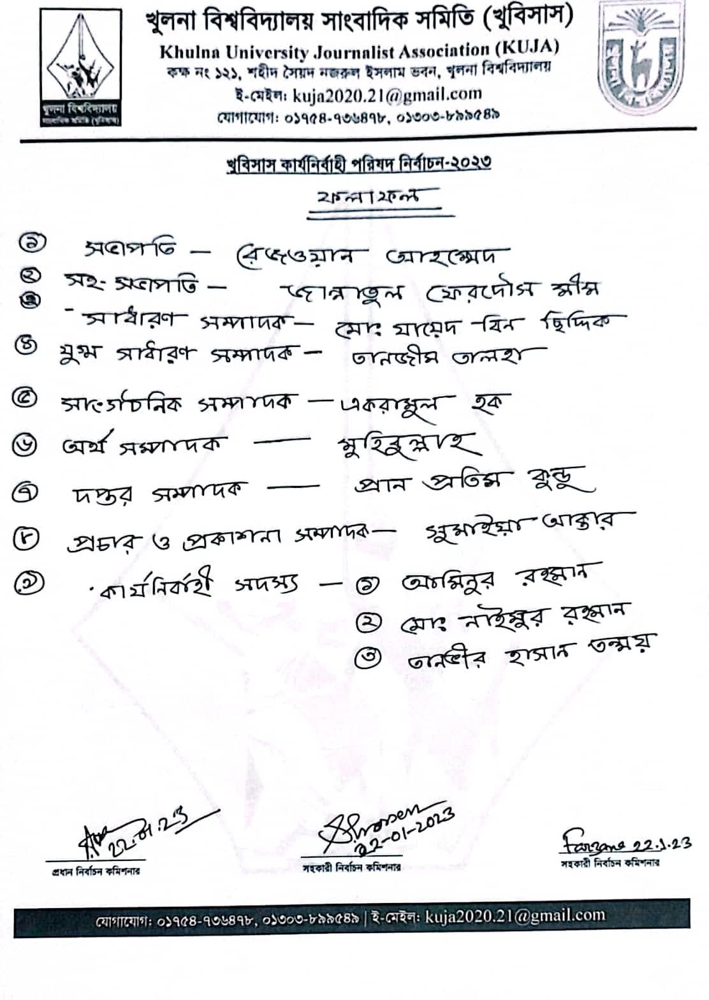

My Role & Contributions
General Secretary & Executive Member (2022 – Mar 2026)
- Led a team of campus journalists and engaged students in professional campus journalism.
- Generated thousands of news stories and feature articles for national and regional news outlets.
- Organized journalism workshops, media training sessions, and competitions across campus.
- Collaborated with media organizations and Press Institute Bangladesh (PIB) for training events.
Associate Member & Active Journalist (2022 – 2023)
- Participated actively in media coverage, campus news reporting, and press releases.
- Managed social media communications and student journalist networking.
Gallery

Training Session

Workshop Event

Team Meeting
KUJA Magazine
Explore the official KUJA Magazine published during my tenure.